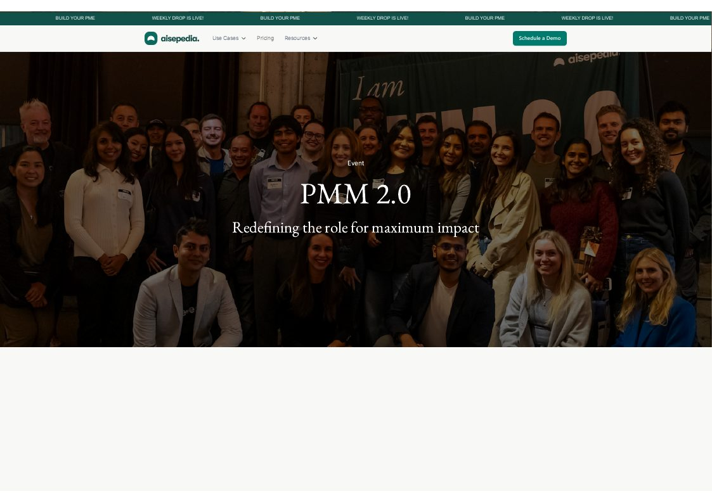
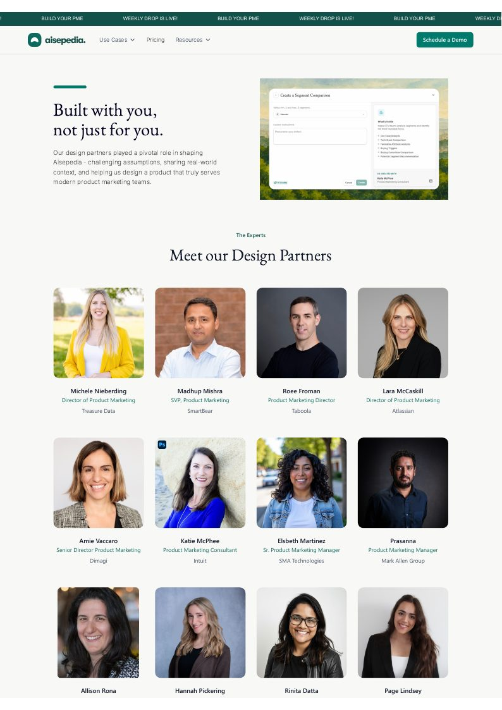

Owned start to finishThe problem, what I owned, and the numbers

The problem
A pre-seed company with no brand needed senior product marketing leaders in one room in San Francisco. That audience ignores vendor outreach, so the evening itself had to be worth their time.
What I owned
ProgrammedBuilt the night around a debate practitioners were already having about their own role, not a product pitch.
RecruitedFour senior panelists, one from the design partner program and three industry leaders from outside it, none through a speakers bureau.
ProducedVenue, logistics, run of show, and promotion for November 11, 2025, with no events team.
ConvertedFollow-up that moved attendees into product conversations and the design partner program.
83 registered, 36 in the room on the night.
0 paid promotion behind the room.
4 panelists from Atlassian, Meta Reality Labs, and Google, plus one with a Celona, Google, and Zscaler background.
The event page is preserved in an archived copy.
Attendance and the panel are verified. Pipeline from the event is not counted separately; it sits inside play 02.
From no list to tracked pipelineThe problem, what I owned, and the numbers
The problem
No brand, no list, no inbound, no SDR. Every one of 134 accounts had to be found, reached, and tracked by one person.
What I owned
Targeted134-account list built from a defined ICP, each tracked from first touch to qualification.
Reached1,000 targeted LinkedIn and outbound reach-outs over six weeks.
QualifiedResponses moved into discovery calls, demos, and the design partner program.
TrackedEvery account held in HubSpot, so pipeline read by stage, not by anecdote.
~$400K
in qualified pipeline I built
134 accounts found, reached, and qualified by one person: no paid media, no SDR, no inherited list.
Qualified pipeline, not booked revenue. These are accounts that reached a defined qualification bar.
03
Design partner conversion
13 design partners, and the first enterprise deal
From cold list to public advocatesThe problem, what I owned, and the numbers

The problem
A pre-seed product with no customers and no references. Senior practitioners had to be recruited cold, kept engaged, and then put their name to it in public.
What I owned
RecruitedBuilt a 13-member design partner cohort, 8 at Director level or above, from Atlassian, Splunk, Taboola, Dimagi, and Intuit, all recruited cold.
Ran32 structured sessions on workflow, pain, trust, and buying criteria.
ActivatedPartners moved into public quotes, a PMM 2.0 panel seat, and reference calls with prospects.
ConvertedOne partner relationship became the first signed enterprise deal.
32 sessions across 13 industries and 9 countries.
1 design partner sat on the PMM 2.0 panel, beside three practitioners from outside the program.
Splunk (a Cisco company) signed as the first enterprise deal, from a design partner.
Positioning artifact
Built with you, not just for you.
The page made practitioners part of the product story, then backed it with named design partners.
Direct measured resultThe problem, what I owned, and the numbers
The problem
One marketer cannot chase every lead and still know what is working. Follow-up decayed during discovery calls, and nobody could say where people dropped out.
What I owned
AutomatedA nine-email, two-track lifecycle sequence across n8n, HubSpot, and Calendly, so no inbound lead waited on me.
InstrumentedThe whole funnel wired in Mixpanel and PostHog, so every drop-off had a location.
DiagnosedEach abandonment point mapped to a likely cause and a recovery action.
MeasuredLifecycle KPIs with warning thresholds for acquisition, activation, and retention.
Automated follow-up, instrumentation, onboarding changes, and recovery flows working together.
05
Revenue intelligence
The reporting five product lines ran on
From revenue data to retention decisionsThe problem, what I owned, and the numbers
The problem
Leadership needed one set of numbers across renewals, expansion, wallet retention, product lines, and verticals. Marketing and sales were arguing over which accounts were at risk.
What I owned
BuiltWeekly wallet-retention and renewal reports, plus monthly MRR and vertical-profitability reporting, read by the CEO, COO, and VP of Finance.
AnalyzedRenewal, expansion, product-line, and wallet-retention signals connected across the subscription book.
SurfacedThe recoverable ACV and monthly expansion potential in the book, plus the verticals slipping month over month.
Directed26,207 deal records and 21 account executives moved from AdBook to Placements.io with zero errors.
$2.6M
in recoverable ACV surfaced
$250K more in monthly expansion potential, from the reporting the CEO, COO, and VP of Finance read weekly.
POLITICO figures were reported on and analyzed. They were not revenue I owned or closed.